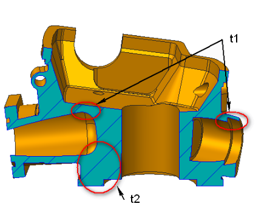

部品の肉厚は、ユーザーが指定した範囲内である必要があります。
砂型鋳造では、設計上のわずかな配慮の違いが、コストに大きな差を生む場合があります。砂型鋳造部品における厚肉部（一般にホットスポットと呼ばれる）は、冷却の不均一を引き起こし、収縮、ポロシティ、または割れの原因となる可能性があります。均一な肉厚を確保することで、均一な冷却が促進され、欠陥を低減できます。
最小肉厚は使用する金属によって異なりますが、一般的には 6 mm 未満にすべきではありません。一方、最大肉厚はセクションの長さによって異なります。
このルールでは、許容される最小および最大肉厚を絶対値として指定するように構成できます。

ここでは、
t1 = 最小肉厚
t2 = 最大肉厚